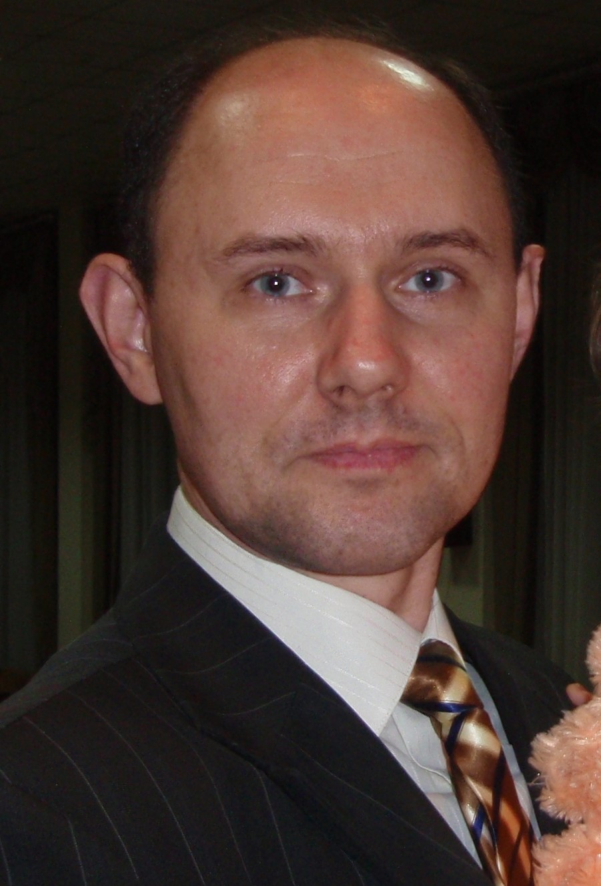

Lomakin Vadym Volodimirovich
Address: Vinnytsia region, Kazatin
E-mail: sragatel@gmail.com
Tel.: +38(096)146-65-96
Telegramm: +38(063)553-2868 @kordins
Facebook
Instagram
I am 51 years old. Born in Lugansk, currently I live in Kazatin, Vinnytsia region.
I am married and have three children - a son and two daughters.
I worked as a driver, was engaged in entrepreneurial activity, shoe repair.
В настоящее время работаю охранником на местном хлебзаводе.
Secondary education
I am currently taking courses in web development and will soon become a good front-end developer.
I want to work as a front-end developer in your company.
I took courses on my own:
I easily communicate with people, I like to learn new skills and help people.
Date of CV compilation 03.03.2021